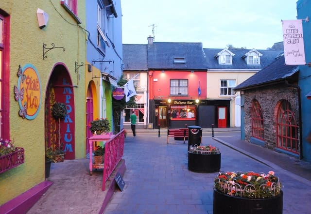
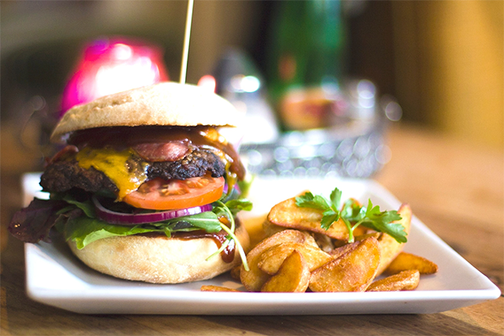
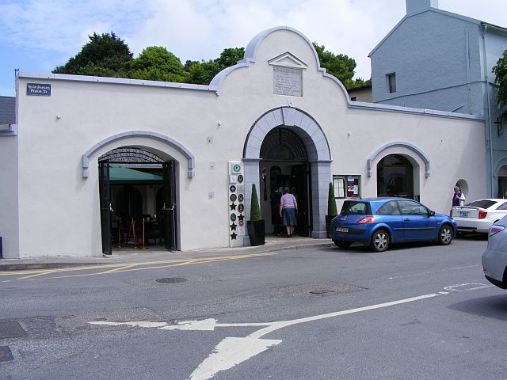
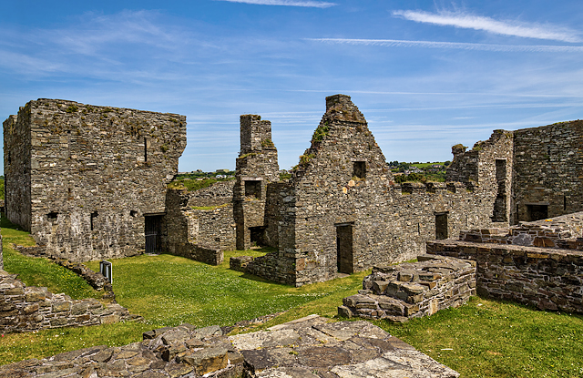

Kinsale has a great variety of shops, from great local boutiques, markets and clothing stores for all your clothing needs to patisseries, bakeries and butchers for all your food needs. Kinsale also has many supermarkets for all general goods needs.
Click here for more
Shopping
Food
Kinsale is known for it's great cuisine internationally, winning both many foodie awards and being crowned the gourmet capitol of Ireland many times. So needless to say you will find many great restaurants, bistros and bars, of which Kinsale has over 40.
Click here for more
Accommodation
Need somewhere to rest your head? Well, Kinsale has a great selection of hotels and B&Bs to stay in.
Click here for more
What's On?
Kinsale is host to many events year wide, from Arts in the Kinsale arts week, Music in the Cork Jazz festival, Cuisine in the chowder festival and sports in the renowned Kinsale rugby 7's weekend, Kinsale has you covered for entertainment and events to go to.
Click here for more